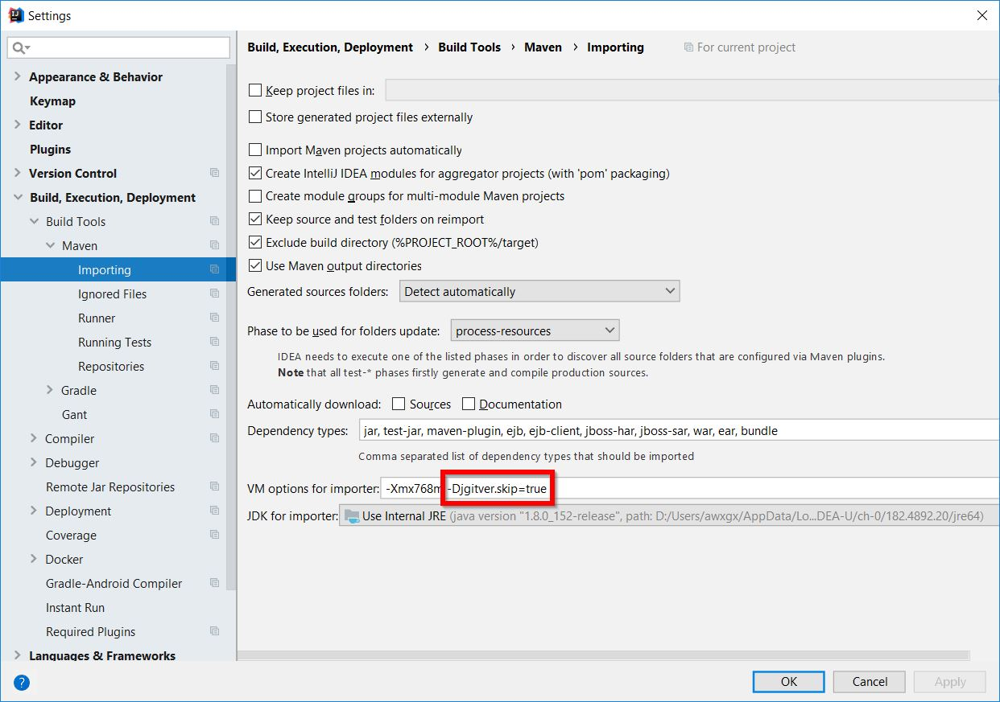

jgitver consists of a set of library and plugins allowing to automatically compute project versions based on:
-
git history
-
git tags (annotated & lightweight)
-
git branches
-
configuration (predefined or explicit)
1. About
because we believe in some high level principles like "DRY (Don’t Repeat Yourself"), "clean git history" we created jgitver to allow automatic computation of project versions without unnecessary steps or edits of files.
1.1. Goal
without changing pom.xml files or build.gradle, simply with git commit, git tag & git branch commands, your project descriptors versions are automatically computed when you launch a build command like mvn package or gradle build
-
pom.xmlversion computations using defaults in maven mode:
-
build.gradleversion computations using defaults in gradle mode:

|
jgitver is highly configurable. You can define & infuence the way the version is computed. See the User Documentation for more details. |
1.2. Clean Git history
because project version are computed automatically, there is no need anymore to pollute the project git history with some infamous unnecessary commits.
Yes maven:release we’re looking at you !
On some projects, some 1/3 of commits are related to maven:release and the pom changes to adapt the version tag inside the pom.xml
Using jgitver a release process becomes really simple: tag & deploy
|
maven release with jgitver is reduced to the following
|
2. Getting Started
2.1. Maven usage
For maven world, jgitver is provided as a maven core extension ; as such it needs to be referenced inside a file YOUR_PROJECT/.mvn/extensions.xml.
If you do not have already an extension file, create one using any following techniques.
Automatic creation of .mvn/extensions.xml
In order to automatically create .mvn/extensions.xml file with latest jgitver version
-
using
curl:
sh -c "$(curl -fsSL https://git.io/fA6sj)"
-
using
wget:
sh -c "$(wget -q https://git.io/fA6sj -O -)"
Manual addition of .mvn/extensions.xml
-
Create a directory
.mvnunder the root directory of your project. -
Create file
.mvn/extensions.xml -
Add the following content to
.mvn/extensions.xml(adapt to latest version).
<extensions xmlns="http://maven.apache.org/EXTENSIONS/1.0.0" xmlns:xsi="http://www.w3.org/2001/XMLSchema-instance"
xsi:schemaLocation="http://maven.apache.org/EXTENSIONS/1.0.0 http://maven.apache.org/xsd/core-extensions-1.0.0.xsd">
<extension>
<groupId>fr.brouillard.oss</groupId>
<artifactId>jgitver-maven-plugin</artifactId>
<version>1.5.1</version>
</extension>
</extensions>2.1.3. Let jgitver operate
Once you have created the extensions file, your project versioning is now handled by jgitver.
Just launch mvn validate to see jgitver in action on your project ; now you can see it computing your project version.
$ mvn validate [INFO] no suitable configuration file found, using defaults [INFO] Scanning for projects... [INFO] Using jgitver-maven-plugin [1.3.0] (sha1: ef8eec9f820d662e63a84f1210c377183e450cbd) [INFO] jgitver-maven-plugin is about to change project(s) version(s) [INFO] fr.brouillard.oss::jgitver::0 -> 0.7.0-SNAPSHOT
Note that for your project jgitver may detect that the version is "0.0.0-SNAPSHOT" because it cannot find any suitable git tags in the repo to determine the correct version. You will need to add tags to your git repo to fully enable jgitver versioning. See the demo below for an example.
2.1.4. Online demo
If you want to quickly evaluate jgitver while being guided in the different steps, please follow the jgitver interactive guide on the katakoda platform.
2.2. Gradle usage
Using jgitver with gradle is as simple as adding it as a plugin
plugins {
id "fr.brouillard.oss.gradle.jgitver" version "0.6.1"
}Congrats, your project now uses jgitver !
$ gradle version > Task :version Version: 1.1.0-1 BUILD SUCCESSFUL in 1s
|
gradle version < 2.1 Above declaration only works for gradle >= 2.1, another way of declaring the plugin, working for all gradle versions including the ones < 2.1 |
2.2.1. Online demo
If you want to quickly evaluate jgitver while being guided in the different steps, please follow the jgitver interactive guide on the katakoda platform.
3. User documentation
|
this section is WIP |
see the projects section to access existing projects README.
3.1. Modes
jgitver provides different ways of computing version called 'modes' or 'strategies'. Each mode comes with some behavior, defaults and configuration capabilities.
Each of the modes has their own options. Those options are detailed in the configuration section of each of the mode sections below.
The mode itself is set via the strategy option:
Click for configuration options
3.1.1. maven mode
|
The maven mode is built to reflect maven way of versioning: SNAPSHOTs and RELEASEs |
In this mode (which is the default mode of the jgitver maven plugin), jgitver will:
-
on a DETACHED HEAD having an annotated tag, use the tag name without further computation : mean to release
-
add SNAPSHOT qualifier to the calculated version each time it is not in the previous state : everything is a SNAPSHOT except a release
-
increase the patch version except if it comes from a lightweight tag : mean to start a new version pattern numbering
-
use annotated tags before lightweight ones when on a DETACHED HEAD : reproducible builds for release
-
use lightweight tags before annotated ones when on a normal branch (master or any other branch) : start 'next' version after release
-
add a branch qualifier on purpose : avoid version collision for feature branches
Click for configuration options
3.1.2. default mode
|
The default mode is built to reflect a standard way of versioning, each commit being uniquely identified. |
In this mode (which is the default mode of the jgitver gradle plugin), jgitver will:
-
on a DETACHED HEAD having an annotated tag, use the tag name without further computation
-
use annotated tags before lightweight ones when on a DETACHED HEAD
-
use lightweight tags before annotated ones when on a normal branch (master or any other branch)
-
exception is when HEAD is on current branch, lightweight tags have precedence only when the repository is dirty
-
-
add a branch qualifier on purpose
Click for configuration options
3.1.3. pattern mode
|
This mode allows some freedom to the project owner. As a project maintainer you define/configure your own pattern of versioning. |
|
The pattern mode is new in jgitver-0.7.0 and is to be considered as beta feature. |
In this mode, jgitver computes some metadatas that can be used in a pattern definition to compute the final version.
These pattern definitions are given as configuration options and should follow the grammar below.
Click for configuration options
Pattern grammar
-
A
patternconsists of at least onepattern element, one after another -
A
pattern elementis either arbitrary characters or adelimited placeholder-
Arbitrary characters include letters, digits, or any of the four symbols “_-.+”
-
-
A
delimited placeholderis “${”, followed by aplaceholder, followed by “}” -
A
placeholderis aninner placeholder, possibly with aprefixbefore it -
A
prefixis one of any of the following:-
Arbitrary characters followed by “:” means the characters will always appear before the
inner placeholder, even if it empty -
Arbitrary characters followed by “~” means the characters will appear before the
inner placeholderif it is not empty -
“<” automatically applies a separator (hyphen between qualifier and version, period between qualifiers) to conform with strict semver rules
-
-
An
inner placeholderis one of any of the following:-
“v”, which will be replaced with the full calculated version number (major.minor.patch)
-
“M”, which will be replaced with the calculated major version number
-
“m”, which will be replaced with the calculated minor version number
-
“p”, which will be replaced with the calculated patch version number
-
“sys.” followed by arbitrary characters, which will be replaced with accessing that system property (via Java’s
System.getProperty) -
“env.” followed by arbitrary characters, which will be replaced with accessing that environment variable (via Java’s
System.getenv) -
“meta.” followed by arbitrary characters, which will be replaced with accessing that meta field
-
Meta fields
| Name | Description |
|---|---|
“CALCULATED_VERSION” |
The calculated version |
“DIRTY” |
Is the repository dirty |
“DIRTY_TEXT” |
Literally the text string 'dirty' if the repository is dirty, empty string otherwise |
“HEAD_COMMITTER_NAME” |
Name of the commiter of HEAD commit |
“HEAD_COMMITER_EMAIL” |
Email of the commiter of HEAD commit |
“HEAD_COMMIT_DATETIME” |
Datetime of the commit |
“GIT_SHA1_FULL” |
Corresponds to then the full git identifier of the HEAD |
“GIT_SHA1_8” |
Corresponds to a substring of the git identifier of the HEAD |
“BRANCH_NAME” |
Corresponds to the current branch name if any |
“QUALIFIED_BRANCH_NAME” |
Branch name used as a qualifier if any |
“PROVIDED_BRANCH_NAME” |
Branch name externally provided if any. |
“HEAD_TAGS” |
Corresponds to the list of tags, associated with the current HEAD |
“HEAD_ANNOTATED_TAGS” |
Corresponds to the list of annotated tags, associated with the current HEAD |
“HEAD_LIGHTWEIGHT_TAGS” |
Corresponds to the list of light tags, associated with the current HEAD |
“HEAD_VERSION_TAGS” |
Corresponds to the list of tags, eligible as version, associated with the current HEAD |
“HEAD_VERSION_ANNOTATED_TAGS” |
Corresponds to the list of annotated tags, eligible as version, associated with the current HEAD |
“HEAD_VERSION_LIGHTWEIGHT_TAGS” |
Corresponds to the list of light tags, eligible as version, associated with the current HEAD |
“BASE_TAG” |
Corresponds to the base tag that was used for the version calculation |
“BASE_TAG_TYPE” |
Corresponds to the type of tag that was used for the version calculation |
“ALL_TAGS” |
Corresponds to the whole list of tags of the current repository |
“ALL_ANNOTATED_TAGS” |
Corresponds to the whole list of annotated tags of the current repository |
“ALL_LIGHTWEIGHT_TAGS” |
Corresponds to the whole list of light tags of the current repository |
“ALL_VERSION_TAGS” |
Corresponds to the whole list of tags that can serve for version calculation |
“ALL_VERSION_ANNOTATED_TAGS” |
Corresponds to the whole list of annotated tags of the current repository that can serve for version calculation |
“ALL_VERSION_LIGHTWEIGHT_TAGS” |
Corresponds to the whole list of light tags of the current repository that can serve for version calculation |
“NEXT_MAJOR_VERSION” |
Exposes the next calculated version by adding one to the major digit of the current retained version |
“NEXT_MINOR_VERSION” |
Exposes the next calculated version by adding one to the minor digit of the current retained version |
“NEXT_PATCH_VERSION” |
Exposes the next calculated version by adding one to the patch digit of the current retained version |
“BASE_VERSION” |
Exposes the version used to base the calculation on for the retained version |
“CURRENT_VERSION_MAJOR” |
Exposes the major version of the computed version, ie the X in X.Y.Z |
“CURRENT_VERSION_MINOR” |
Exposes the minor version of the computed version, ie the Y in X.Y.Z |
“CURRENT_VERSION_PATCH” |
Exposes the patch version of the computed version, ie the Z in X.Y.Z |
“COMMIT_DISTANCE” |
Exposes the commit distance from the base tag used for the version computation |
“COMMIT_DISTANCE_TO_ROOT” |
Exposes the distance from HEAD to the root ancestor |
“COMMIT_TIMESTAMP” |
Exposes the commit timestamp instant in the current system timezone using a simplified DateTimeFormatter.ISO_LOCAL_DATE_TIME |
“COMMIT_ISO_TIMESTAMP” |
Exposes the commit timestamp instant in the UTC timezone using DateTimeFormatter.ISO_OFFSET_DATE_TIME |
“ANNOTATED” |
True if the current HEAD is on an annotated tag, false otherwise |
“DETACHED_HEAD” |
True if the current HEAD is detached, false otherwise |
“BASE_COMMIT_ON_HEAD” |
True if the current HEAD is on the same commit as the one serving as reference for the version computation |
Examples
As a simple example, the following patterns produce equivalent output:
-
“${v}”
-
“${M}.${m}.${p}”
-
“${meta.CALCULATED_VERSION}”
The following pattern substitutes the commit distance for the patch number:
-
"`${M}.${m}.${meta.COMMIT_DISTANCE}"
The following pattern appends the branch name and git commit ID as a qualifier, using the “<” prefix to use periods after the first hyphen:
-
“${v}${<meta.QUALIFIED_BRANCH_NAME}${<meta.GIT_SHA1_8}” might produce "1.2.3-develop.a1b2c3d4"
The following pattern appends the value of an environment variable "FOO" to the version, and always adds a hyphen even if it is empty with the “:” prefix:
-
“${v}${-:env.FOO}” might produce "1.2.3-bar" if the "FOO" environment variable contains "bar"
-
“${v}${-:env.FOO}” might produce "1.2.3-" if the "FOO" environment variable is empty
Same as above but using the “~” prefix to optionally apply the hyphen:
-
“${v}${-~env.FOO}” might produce "1.2.3-bar" if the "FOO" environment variable contains "bar"
-
“${v}${-~env.FOO}” might produce "1.2.3" if the "FOO" environment variable is empty
3.2. Maven configuration
3.2.1. Configuration file
Jgitver’s Maven configuration file may be placed at $rootProjectDir/.mvn/jgitver.config.xml.
The file should be compliant with the latest schema (given in the README). An example is below.
The file as given is the default, if a value isn’t provided it is because there isn’t a default. All settings are optional.
<configuration xmlns="http://jgitver.github.io/maven/configuration/1.1.0"
xmlns:xsi="http://www.w3.org/2001/XMLSchema-instance"
xsi:schemaLocation="http://jgitver.github.io/maven/configuration/1.1.0 https://jgitver.github.io/maven/configuration/jgitver-configuration-v1_1_0.xsd">
<!-- One of MAVEN, CONFIGURABLE, PATTERN -->
<strategy>MAVEN</strategy>
<!-- Deprecated (this field replaced and overridden by strategy), boolean -->
<mavenLike>true</mavenLike>
<!-- One of MAX, LATEST, NEAREST -->
<policy>MAX</policy>
<!-- Boolean -->
<autoIncrementPatch>true</autoIncrementPatch>
<!-- Boolean -->
<useCommitDistance>true</useCommitDistance>
<!-- Boolean -->
<useDirty>false</useDirty>
<!-- Boolean -->
<useGitCommitId>false</useGitCommitId>
<!-- Integer between 8 and 40 inclusive -->
<gitCommitIdLength>8</gitCommitIdLength>
<!-- Integer -->
<maxSearchDepth>Integer.MAX_VALUE</maxSearchDepth>
<!-- String, comma separate multiple branches -->
<nonQualifierBranches>master</nonQualifierBranches>
<!-- An optional list of directories to not assign Jgitver's version for -->
<exclusions>
<!-- String, relative path from project root -->
<exclusion></exclusion>
</exclusions>
<!-- Boolean -->
<useDefaultBranchingPolicy>true</useDefaultBranchingPolicy>
<!-- String, only for PATTERN strategy" -->
<versionPattern>${v}${<meta.QUALIFIED_BRANCH_NAME}${<meta.COMMIT_DISTANCE}</versionPattern>
<!-- Usages of "<" are escaped with "<" -->
<!-- String, only for PATTERN strategy -->
<tagVersionPattern>${v}</tagVersionPattern>
<branchPolicies>
<branchPolicy>
<!-- String, regex with one capture group -->
<pattern></pattern>
<transformations>
<!-- String, a name of a transformation -->
<transformation>REPLACE_UNEXPECTED_CHARS_UNDERSCORE</transformation>
<transformation>LOWERCASE_EN</transformation>
</transformations>
</branchPolicy>
</branchPolicies>
<!-- String, regex with at least one capture group -->
<regexVersionTag>v?([0-9]+(?:\\.[0-9]+){0,2}(?:-[a-zA-Z0-9\\-_]+)?)</regexVersionTag>
</configuration>The branch policy is a list so that it may represent policies for different patterns. For example:
<configuration xmlns="http://jgitver.github.io/maven/configuration/1.1.0"
xmlns:xsi="http://www.w3.org/2001/XMLSchema-instance"
xsi:schemaLocation="http://jgitver.github.io/maven/configuration/1.1.0 https://jgitver.github.io/maven/configuration/jgitver-configuration-v1_1_0.xsd">
<branchPolicies>
<branchPolicy>
<pattern>feature_(.*)</pattern>
<transformations>
<transformation>REMOVE_UNEXPECTED_CHARS</transformation>
<transformation>UPPERCASE</transformation>
</transformations>
</branchPolicy>
<branchPolicy>
<pattern>(master)</pattern>
<transformations>
<transformation>IGNORE</transformation>
</transformations>
</branchPolicy>
</branchPolicies>
</configuration>For more information on all of the different options, see the configuration options for your chosen mode.
3.3. Gradle configuration
|
Configuration of the gradle-jgitver-plugin is only supported in plugin versions above 0.2.0. Information on behavior before that point is available in the README. |
3.3.1. Configuration block
Jgitver’s Gradle configuration block is as follows.
The block as given is the default, if a value is missing it is because none is provided by default. All settings are optional.
jgitver {
// One of 'MAVEN', 'CONFIGURABLE', 'PATTERN'
strategy 'CONFIGURABLE'
// Deprecated (use strategy instead), boolean
mavenLike false
// One of 'MAX', 'LATEST', 'NEAREST'
policy 'MAX'
// Boolean
autoIncrementPatch true
// Boolean
useDistance true
// Boolean
useDirty false
// Boolean
failIfDirty false
// Boolean
useGitCommitTimestamp false
// Boolean
useGitCommitID false
// Integer between 8 and 40 inclusive
gitCommitIDLength 8
// Since plugin version 0.7.0, integer
maxDepth Integer.MAX_VALUE
// String, comma separate multiple branches
nonQualifierBranches 'master'
// Since plugin version 0.6.0, string, only for PATTERN strategy
versionPattern '${v}${<meta.QUALIFIED_BRANCH_NAME}${<meta.COMMIT_DISTANCE}'
// Since plugin version 0.6.0, string, only for PATTERN strategy
tagVersionPattern '${v}'
// Closure, can be set multiple times
policy {
// String, regex with one capture group
pattern =
// Array of strings, each being a transformation
transformations = ['REPLACE_UNEXPECTED_CHARS_UNDERSCORE', 'LOWERCASE_EN']
}
// One of 'FIRST_PARENT', 'LOG', 'DEPTH'
distanceCalculatorKind 'FIRST_PARENT'
// String, regex with at least one capture group
regexVersionTag 'v?([0-9]+(?:\\.[0-9]+){0,2}(?:-[a-zA-Z0-9\\-_]+)?)'
}The branch policy can be set multiple times to set policies for different patterns. For example:
jgitver {
policy {
pattern = 'feature_(.*)'
transformations = ['REMOVE_UNEXPECTED_CHARS', 'UPPERCASE']
}
policy {
pattern = '(master)'
transformations = ['IGNORE']
}
}For more information on all of the different options, see the configuration options for your chosen mode.
3.3.2. Multi-project builds
In a multi-project build, jgitver can be enabled and globally for all projects. Assuming that the root project and all sub-projects are in the same repository, this will keep their versions perfectly in sync.
Configuration is done in the root project’s build.gradle:
// Define plugin here (only actually applies the plugin in the root project)
plugins {
id "fr.brouillard.oss.gradle.jgitver" version "0.9.1"
}
allprojects {
// Ensure plugin is applied in all projects
apply plugin: 'fr.brouillard.oss.gradle.jgitver'
jgitver {
// Your config goes here
}
}3.4. IDEs usage
By providing dynamic versioning, jgitver is not currently the best friend of IDEs.
But on the other hand your IDE is probably not your build tool ; so it is not a problem if it does understand all of your build pipeline.
Please refer to the instructions of your preferred IDE and if you need projects dependencies within the IDE then look at the latest paragraph.
3.4.1. Eclipse
Having jgitver setup on your project does not hurt Eclipse at all.
Just import your project as you would do normally. Eclipse will import it using the content of your pom.xml file, it will not evaluate version using jgitver.
3.4.2. Intellij IDEA
Unfortunately, Intellij IDEA still does not work out of the box when jgitver is there. The problem has been reported to Intellij under the following issue IDEA-187928.
To workaround Intellij failure, you have to deactivate jgitver for the import step.
For maven projects for example, open the settings CTRL+ALT+S and modify imports settings by adding -Djgitver.skip=true
as in the below image.

3.4.3. Netbeans
Exactly like Eclipse does, Netbeans just use the content of the pom.xml while importing your project. Just import your project as you would do normally.
3.4.4. Project dependencies within IDEs
If you want to open several projects within your IDE and make project references between those projects then having projects which version is dynamically changing is not the best way to help your IDE keeping the references between the projects.
Especially if your are not using maven like SNAPSHOT but unique version for each of your commits then it is better to bypass the dynamic nature of jgitver.
|
this section is WIP |
4. Developer documentation
4.1. Projects
jgitver is composed by:
-
jgitver library: a java library using git that computes a git repository version based on a given configuration
-
jgitver maven plugin: a maven core extension allowing to compute POM versions without any effort or
pom.xmlmodification -
jgitver gradle plugin: a gradle plugin allowing to compute gradle project version
As it is always good to eat your own food, all the above projects self-use either the jgitver maven plugin or gradle one ; thus you can look at them as examples.
4.2. Contribution
|
this section is WIP |
Any kind of contribution is highly appreciated and welcome.
You can help the project in many ways:
-
leverage it’s usage in your company
-
create a blog, tweet, post on social media ; make some awareness of the project
-
star the projects on github
-
ask & answer questions on the gitter chat room
-
report issues in each projects issues page (library, maven, gradle)
-
participate in documentation enhancement (VERY important)
-
this documentation enhancement, please read the README, open a pull request with your change
-
README & documentation enhancement (via PR on each project)
-
new katacoda tutorials, make PR on this project: jgitver-katacoda-scenarios
-
-
new feature or bug fixing via a PR on each project
-
support the project:
-
via a paypal donation
-
for other kind of support please email Matthieu Brouillard using: oss@brouillard.fr
-
4.3. Who is using jgitver
|
If you want your company/project to be named here you can either: |
jgitver is already in use in:
-
all jgitver projects
4.4. Support
4.4.1. Community Support
-
for a question about the usage of jgitver or any of it’s plugin, please use the
 room.
room. -
in case of bug please open an issue:
-
maven related problems: jgitver-maven-plugin/issues
-
gradle related problems: gradle-jgitver-plugin/issues
-
for enhancement requests, please open an issue on the library itself
-
-
to contribute to this documentation, please read the README, open a pull request with your change
-
due to history, the maven plugin had also a wiki. There is a continuous effort to migrate the wiki pages into the official documentation project.
4.4.2. Professional support
For anything outside of the community support please contact me